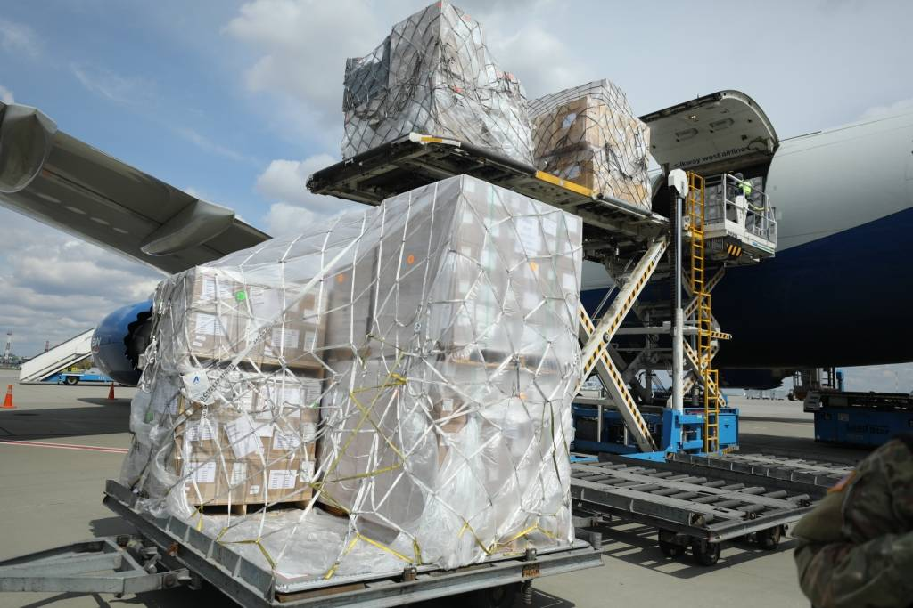
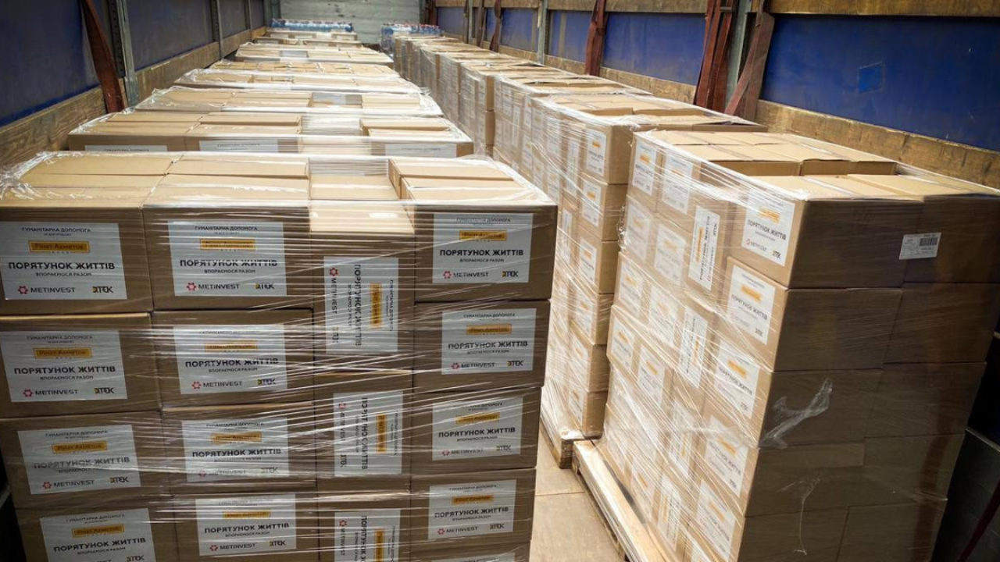

<div class="about-us__body-wrapper width-scale">
    <div class="container about-us__body-container">
        <div class="row">
            <div class="about-us__image-wrapper">
                
            </div>
        </div>

        <div class="row">
            <div class="about-us__text-wrapper">
                Мы - группа волонтеров, которая с 2022 года занимается предоставлением
                беспилотных летательных аппаратов украинской армии. Наш фонд объединяет
                более <span class="text-accent text-bold">30 человек</span> в
                странах, пострадавших от диктаторского режима Российской Федерации. Наши
                действия способствуют созданию и внедрению сетецентрических и
                роботизированных военных возможностей для службы безопасности Украины
                <span class="text-accent text-bold">(СБУ)</span> и вооруженных
                сил Украины
                <span class="text-accent text-bold">(ВСУ)</span> путем сбора
                анонимных пожертвований от политически активных граждан, желающих внести
                весомый вклад в оказание помощи украинской стороне и остановить геноцид
                русского народа. Мы является примером прямого участия российского
                гражданского общества в подавлении агрессии против Украины
            </div>
        </div>

        <div class="row">
            <div class="about-us__image-wrapper">
                
            </div>
        </div>

        <div class="row bottom-margin">
            <div class="about-us__text-wrapper">
                На вырученные средства мы закупаем беспилотники для
                <span class="text-accent text-bold"
                >1-й, 2-й и 3-й линий фронта (DJI Mavic 3, Autel EVO II 640T, DJI
        Matrice 300 RTK, и DJI Matrice 30T)</span
                >, координируя закупки с украинскими военнослужащими. Нашей целью является
                приобретение
                <span class="text-accent text-bold">50</span> тактических
                беспилотных летательных аппаратов воздушной разведки. Эти «дроны» могут
                летать до <span class="text-accent text-bold">24 часов</span>,
                на расстояние до
                <span class="text-accent text-bold">160 км</span>, на высоте
                до <span>5 км</span>. Они оснащены несколькими термографическими камерами
                с GPS-модулями и картографическим программным обеспечением. Главное, что
                их трудно заметить, а это значит, что их трудно уничтожить, они помогут
                постоянно следить за линией фронта и выявлять позиции агрессора.
            </div>
        </div>
    </div>
</div>
